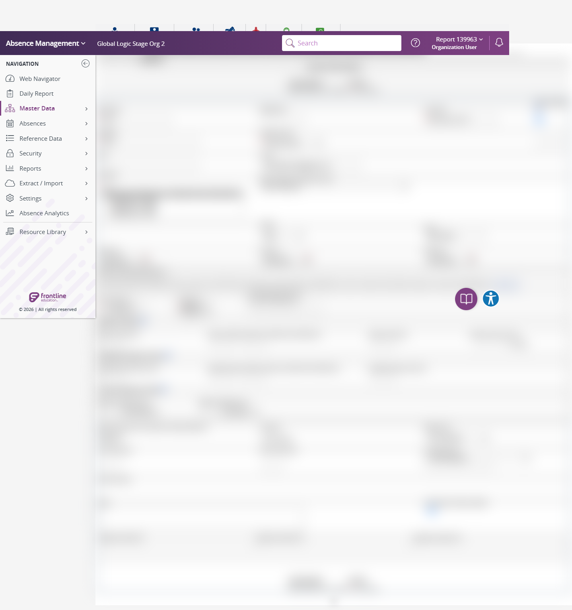

Execution 11 · Create Synthetic Employee
tests/employee/create-employee.md · Video 12:05–12:53
11
Execution
12:05–12:53
Continuous-video range
Unattended safe mode
Execution mode
Scenario outcome
Duplicate protection passed and the complete synthetic Employee form accepted all values and dropdown selections. Apply Changes was intentionally not selected in unattended safe mode, so creation and saved-record verification were not tested.
Continuous video evidence
Screenshot evidence
{kind=link}

Complete test structure
Source: tests/employee/create-employee.md
# Create Employee — AES Stage ## Full-suite execution mode When this scenario is executed by `instructions/full-suite-headed-video-execution.md`, follow the coordinator's selected mode: - **Unattended safe mode:** complete navigation, duplicate protection, field interaction, and validation checks, but do not select the final Apply action. Mark creation and all checks that depend on a saved Employee **NOT TESTED — unattended safe mode**. - **Full destructive mode:** create only the documented synthetic Employee, capture its assigned ID for the later delete scenario, and follow the coordinator's grouped cleanup and action-time confirmation rules. ## Execution directive Before any browser action, read completely: 1. `instructions/project-instructions.md` 2. `instructions/application-details.md` 3. `instructions/test-data.md` Execute this scenario directly in Chrome using Playwright MCP. Do not generate Playwright or TypeScript code. Save the execution report under `reports/`. ## Objective Log in to AES Stage, create the specified employee, apply the changes, and verify the employee through Last Name search. ## Preconditions - Playwright MCP is available. - `https://aesstage.flqa.net` is reachable and is confirmed as the Stage environment. - Resolve the password from `AES_STAGE_PASSWORD` first and `.secrets/aes-stage.credentials.json` second without displaying or reporting it. - Continue only on hosts listed in `config/aes-stage.json`. ## Steps ### 1. Launch and authenticate 1. Launch Chrome through Playwright MCP and open `https://aesstage.flqa.net`. - Expected: The AES Stage login page displays visible username and password fields. 2. Enter username `report_139963`. - Expected: The username field contains `report_139963`. 3. Enter the password from the approved runtime credential source. - Expected: The password field is populated and the secret is not exposed in tool output, screenshots, videos, or reports. 4. Select the visible login or sign-in button once. - Expected: Login is submitted without a validation error. 5. Wait for navigation to finish. - Expected: The user is redirected away from the login page, the application home page is visible, and `Master Data` is available. ### 2. Navigate to employee general information 6. Navigate through `Master Data` → `Employee` → `General Information` in that order. - Expected: The Employee General Information page is displayed. 7. Confirm the `Add Employee` link is visible. - Expected: The page is ready for employee maintenance. ### 3. Prevent accidental duplicates 8. If the page provides search before creation, search Last Name for the exact value `Emp_Auto_7618`. - Expected: No existing employee with both Last Name `Emp_Auto_7618` and Identifier `7618` is present. - If an exact match already exists, stop without creating a duplicate and mark the scenario **BLOCKED**. ### 4. Create the employee 9. Select the `Add Employee` link. - Expected: The add-employee form is displayed. 10. Populate the form with these exact values: | Field | Value | |---|---| | First Name | `7618` | | Last Name | `Emp_Auto_7618` | | Email | `automationUser@gmail.com` | | Gender | `Male` | | Start Date | `09/24/2019` | | End Date | `09/25/2020` | | Birth Date | `03/05/1993` | | Employee | `Security Guard` | | Phone | `3788069839` | | Pin | `69839` | | Identifier | `7618` | | School | `Global Logic STAGE Org 2 11AB025A-EE18-43D5-9082-4` | - Select exact dropdown/autocomplete options for Gender, Employee, and School when applicable. - For date controls, enter the documented values and accept an equivalent UI-normalized display only if it represents the same dates. - Expected: Every visible field contains or displays the intended value. 11. Review all values and reconfirm the host is `aesstage.flqa.net`. - Expected: The form contains the exact requested data in the Stage environment. 12. In full destructive mode, click `Apply Changes` to save the Employee details. In unattended safe mode, stop before this action and mark the persistent creation branch **NOT TESTED**. - Expected: The application displays a successful save confirmation or returns to a saved employee detail/list view with no validation errors. ### 5. Verify through search 13. Return to the Employee General Information search/list view if needed. - Expected: The employee search option is available. 14. Search using Last Name `Emp_Auto_7618`. - Expected: At least one result matching the exact Last Name is displayed. 15. Open or inspect the result whose Identifier is `7618`. - Expected: Exactly one record matches both Last Name `Emp_Auto_7618` and Identifier `7618`. 16. Verify the saved record against all available submitted values, especially First Name, Last Name, Email, Employee, Phone, Pin, Identifier, and School. - Expected: The displayed employee data matches the submitted test data. ## Final result - Mark **PASS** only if creation succeeds and the exact employee is found through Last Name search. - Mark **FAIL** if submission or verification produces an application/validation error or values do not match. - Mark **BLOCKED** if authentication, secure password entry, permissions, environment validation, or duplicate protection prevents safe completion. ## Cleanup Do not delete the employee. Record Last Name `Emp_Auto_7618` and Identifier `7618` in the report for a later delete flow. Never record the password. ## Reporting Create both files with the same timestamp: 1. `reports/create-employee-<YYYYMMDD-HHMMSS>.md` 2. `reports/create-employee-<YYYYMMDD-HHMMSS>.html` Both reports must contain start/finish times, environment URL, overall status, every case's action/expected/actual/status, safe error details, screenshot paths, and cleanup status. The HTML report must be a polished, standalone, responsive document that opens directly in a browser without external dependencies. Include: - Overall status and Pass/Fail/Not Tested totals - Executive summary and highlighted failures - Searchable and status-filterable test-results table - Observed boundary or maximum-length comparisons - Safety and cleanup summary - Print-friendly styling Never include the password, environment-variable value, tokens, cookies, authentication fragments, or other secrets in either report.
Safety and cleanup
No password, token, cookie, or authentication fragment is included. Unattended safe mode did not create, update, or delete persistent staging records.